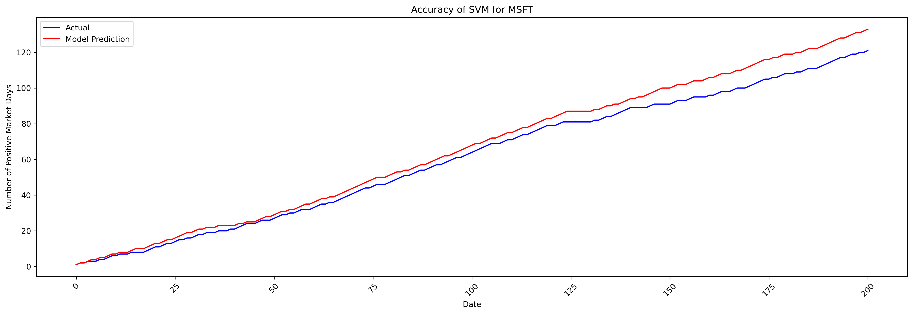
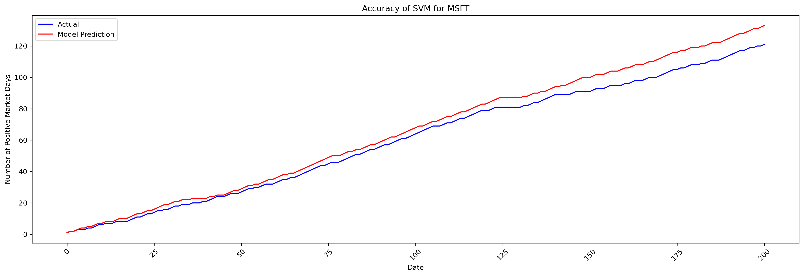

Stock Market Trend Prediction - Midterm Checkpoint
Introduction/Background
The stock market is a complex adaptive system, consisting of individual components that interact in response to global events.
This makes predicting stock market trends a challenging yet crucial task for investors and financial institutions.
The large size of stock market historical data lends itself well to machine learning algorithms; however, no one has been
able to create a successful model as historical data is not enough. Others have tried to utilize news sentiment data instead
of historical data to make predictions, yet their models still fail. This project takes the unique approach of attempting to
combine both historical data and news sentiment in order to develop a machine learning model with the ability to forecast
short-term stock price movements for S&P 500 companies.
Recent studies have explored various machine learning approaches for stock prediction. Jiang et al. (2021) used LSTM networks
for stock price prediction incorporating news sentiment [1]. Patel et al. (2020) compared various machine learning techniques
for stock trend prediction [2]. Feng et al. (2019) developed a deep learning framework for stock prediction using technical
indicators and textual data [3].
We will use a combination of datasets:
- Yahoo Finance API for historical stock price data of S&P 500 companies
- Alpha Vantage News’ API for real-time and historical financial news articles[3]
Links to datasets:
- Yahoo Finance: https://finance.yahoo.com
- Alpha Vantage News: https://www.alphavantage.co
Problem Definition
Accurate stock market prediction is crucial for optimizing investment strategies, managing financial risks,
and understanding market dynamics. The challenge lies in developing a model that can effectively combine numerical
time series data with textual sentiment information to predict short-term (1-5 days) stock price movements.
Data Collection and Preprocessing
We need two types of data: technical indicators and news articles for our stocks. In order to get technical indicators,
we utilized the yahoo finance API. This provided only basic stock details, so we implemented our own functions to
calculate more technical indicators for our stock. For news sentiment data, Alpha Vantage news was our source.
For each symbol, news articles were retrieved. Their text was cleaned and tokenized. Finally, we compute the sentiment,
polarity, and subjectivity of the article as separate features to use in our model.
Once we have obtained the data, we must preprocess it. For this stage of the project we wanted to simplify our data to
make debugging our model easier; therefore, PCA was employed. Although the number of features we had before using PCA
was not very high, reducing to the most important features did help with improving the visualization of the model.
ML Models
- LSTM Neural Network
- Useful for sequential data, this will be ideal for the relation of our data for the forecasting nature of our problem[1].
- Random Forest Classifier
- Multiple decision trees, that outputs the mode, good for when data can be noisy as stocks can.
- Support Vector Machine
- Models used for classification and regression, good for classification of stock trends.
We applied three unique models to our problem to determine what architecture most accurately predicted stock market trends.
The first model applied was Long short-term memory or LSTM. LSTM is a type of recurrent neural network (RNN) aimed at mitigating the vanishing gradient problem.
LSTM lends itself well to our problem as its memory retention characteristics allows for our model to learn from both short-term fluctuations and long-term trends.
The second model applied was the Random Forest Classifier. Random Forest is an ensemble learning method that combines multiple decision trees to improve predictive accuracy
and reduce overfitting. This model is well-suited for our problem because it can handle a large number of features and capture complex relationships between variables.
Its ability to aggregate predictions from numerous trees helps to enhance robustness and accuracy, making it effective for classifying stock market trends where patterns may be influenced by various factors.
The third model applied was the Support Vector Machine (SVM). SVM is a powerful supervised learning algorithm used for classification tasks. It works by finding the optimal hyperplane that separates different classes
in the feature space, maximizing the margin between them. SVM is particularly effective for our problem because it can handle high-dimensional data and complex decision boundaries. Its ability to generalize well with a
smaller amount of training data makes it suitable for predicting stock market trends, where clear distinctions between price movements are often subtle and nonlinear.
Results and Discussion
Long Short-Term Memory
The first model we are going to discuss is the LSTM model. This model achieved our highest accuracy score of 96%,
leveraging its ability to remember long-term trends while still focusing on recent movements. The three below graphs
illustrate LSTM’s prediction performance over a 200 day period. The y-axis is the cumulative number of positive market days
with the red line being our model’s predictions and the blue line being reality. The small margin of difference between
reality and our model’s prediction emphasizes our model’s power. However, the model exhibited high error variance
indicating inconsistent performance for more volatile stocks. Additionally, LSTM’s reliance on substantial training
data and its tendency to overfit to specific patterns poses a challenge for generalization across diverse market conditions.
Random Forest Classifier
The Random Forest Classifier model performed very poorly, with roughly 50% accuracy.
It classifies stock trends with a 50% accuracy, which means it's about as efficient as flipping a coin.
This is due to inefficient features being selected. When training the model, we created Permutation Feature
Importance (PFI) charts, which show how a model's performance is impacted if we shuffle the values of an individual feature.
We will also use a confusion matrix, which displays false positives, true negatives, etc., to gauge the accuracy of our upward/downward trend
classifications.
On the first iteration of the model (~50% accurate), we yielded the following charts:
According to the PFI chart, MACD, Volatility, and Open were the most importance features, since shuffling values
negatively impacted the performance of the model. On the contrary,
SMA5 and SMA20 may have contributed to the model overfitting the data, indicated by the strong negative direction.
The confusion matrix further shows the inaccuracy of the model, since we could see that the classifications were
evenly distributed.
To try improving the performance of the model, we used the information from the PFI chart
and removed the SMA5 and SMA20 features. The second iteration of the model (~50% accurate) yielded
the following charts:
 This time, it seems that the only significant feature was MACD, which is concerning. None of the other features
were significantly affecting the performance of the model. The confusion matrix tells the same story as before.
Removing more features proves unsuccessful, likely because our model would have too little features.
The third iteration of the model (~47% accurate) yielded the following charts:
The PFI chart is telling us that ALL the features may be negatively impacting the model. Furthermore,
the confusion matrix shows a greater sum along the incorrect predictions than the correct predictions.
This time, it seems that the only significant feature was MACD, which is concerning. None of the other features
were significantly affecting the performance of the model. The confusion matrix tells the same story as before.
Removing more features proves unsuccessful, likely because our model would have too little features.
The third iteration of the model (~47% accurate) yielded the following charts:
The PFI chart is telling us that ALL the features may be negatively impacting the model. Furthermore,
the confusion matrix shows a greater sum along the incorrect predictions than the correct predictions.
Support Vector Machine
Moving on to a more successful model, SVM had similar but slightly worse performance than LSTM. All three below graphs
show a small deviation in the model’s predictions and reality, emphasizing the model’s accuracy, coming out with
an average accuracy of around 85 percent. SVM’s ability to handle high dimensional data lended itself well to our
financial data, but there were still limitations of this architecture. SVM’s higher RMSE value of around .4 highlights
SVM’s limitations to capture temporal dependencies inherent in stock data. Additionally, SVM may struggle with high
volatility market conditions, as it lacks sequential learning capabilities unlike the LSTM model.
 

Quantitative Measures
- Achieve an accuracy of at least 60% in predicting the direction of stock price movements
- Develop a model that outperforms a simple buy-and-hold strategy in terms of Sharpe Ratio (> 1.5)
- Mean Absolute Percentage Error for price predictions (≤ 5%)
- F1 Score, a harmonic mean of precision, for trend classification (≥ 0.65)
Next Steps
The next steps involve exploring methodologies to combine the strengths of the three discussed models into a unified,
hybrid framework. This approach could leverage each model’s unique capabilities—whether in time-series analysis, sentiment
interpretation, or classification—creating a more robust and comprehensive solution. Key takeaways include the importance
of integrating diverse data sources to improve predictive power, the value of adaptability in model design, and the
potential for innovation when merging traditional and advanced techniques. This endeavor highlights the broader goal
of creating scalable and holistic systems for tackling complex real-world problems.
References
[1] J. Li, G. Li, M. Liu, X. Zhu, and L. Wei,
“A novel text-based framework for forecasting agricultural futures using massive online news headlines,
”International Journal of Forecasting, vol. 38, no. 1, pp. 35–50, Jan. 2022, doi: https://doi.org/10.1016/j.ijforecast.2020.02.002.
[2] J. Patel, S. Shah, P. Thakkar, and K. Kotecha,
“Predicting stock and stock price index movement using Trend Deterministic Data Preparation and machine learning techniques,
”Expert Systems with Applications, vol. 42, no. 1, pp. 259–268, Jan. 2015,doi: https://doi.org/10.1016/j.eswa.2014.07.040.
[3] F. Feng, H. Chen, X. He, J. Ding, M. Sun, and T.-S. Chua, “Enhancing Stock Movement Prediction with Adversarial Training,” arXiv.org, Jun. 01, 2019. https://arxiv.org/abs/1810.09936v2
Gantt Chart
Contribution Chart
- Useful for sequential data, this will be ideal for the relation of our data for the forecasting nature of our problem[1].
- Multiple decision trees, that outputs the mode, good for when data can be noisy as stocks can.
- Models used for classification and regression, good for classification of stock trends.